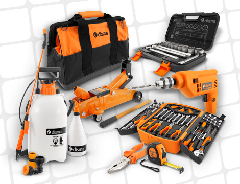

Praticidade e confiança em atividades profissionais leves e bricolagem. Afinal, se você quer fazer sempre melhor, faça com DISMA!
Com o conceito "faça você mesmo", as ferramentas DISMA são ideais para manutenções e reparos domésticos, pois são práticas e multifuncionais. São indicadas para uso hobby e profissional leve, como na construção civil, jardinagem, marcenaria e muitos outros.
Produtos
Seus produtos estão divididos nas categorias: ferramentas manuais e de corte, construção civil, abrasivos, medição, ferragens, fixadores, pulverização e jardinagem. Seja qual for a área de atuação a DISMA sempre tem uma solução que melhor se encaixa na necessidade de cada um de seus revendedores e consumidores.
